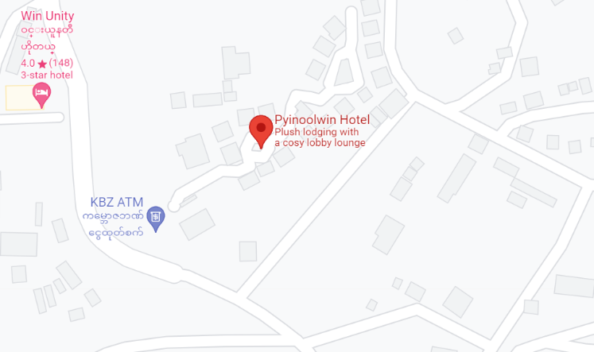
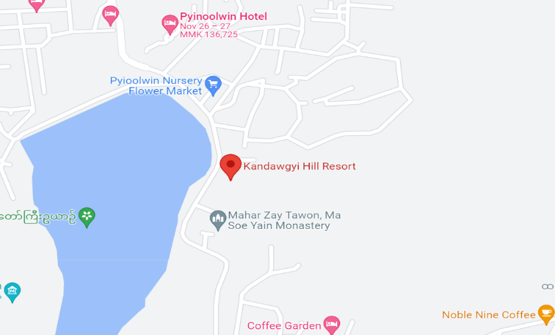
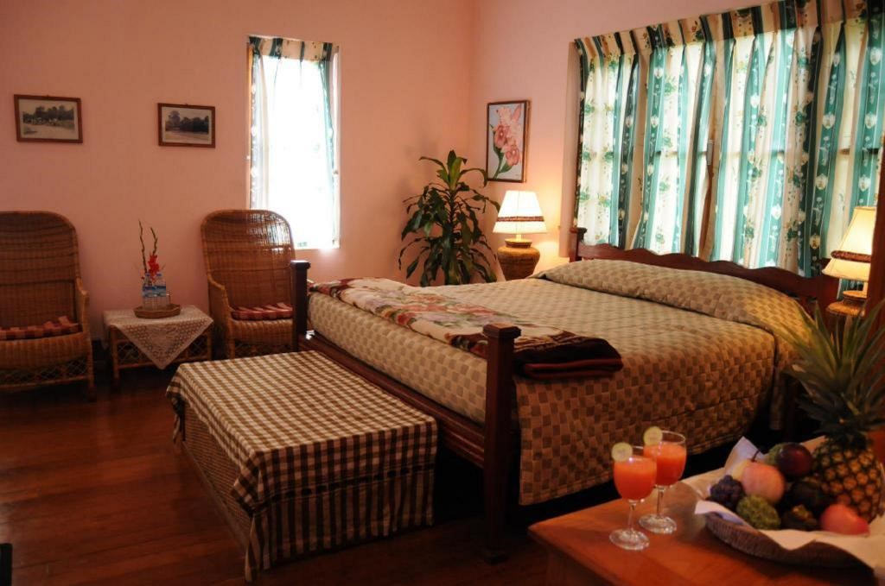

Price- $66(discount*) per night
Free cancellation before November 24, 2021, available charging with coupons ($25 off)
Rating- given 8- and 4-stars hotel with such great reviews.
Breakfast- Free
Wifi- Free
Car Parking- included
Address- No. 9 Nanda Rd, near Botanical Gardens, Pyin Oo Lwin City Center, Pyin Oo Lwin, Myanmar, 11221
Contact- +95 9 40251 0709
Check in from- 14:00pm
Check out until- 12:00am
You may think it’s expensive but it’s actually worthier than you expect! Hotel Pyin Oo Lwin is the perfect place to experience Pyin Oo Lwin and its surroundings. From here, guests can enjoy easy access to all that the lively city has to offer. Not only these, balcony/terrace with pleasant garden view will be welcoming you whenever you wake up in the morning. You can either relax yourself with available activities: billiards, fitness center, garden, hot tub, massage, sauna, spa and swimming pool [indoor]. In addition, Hotel Pyin Oo Lwin is your one-stop destination for quality hotel accommodations in Pyin Oo Lwin.
Hotel Maymyo

Map
Room
Price- $26 cheapest rate per night
Rating- 8.5- and 3-stars hotel according to google
Designed for both business and leisure travel, this 3-star hotel commands an excellent location and provides access to the city's biggest attractions. Every effort at the hotel is made to make guests feel comfortable. To do so, the hotel provides the best in services and amenities like concierge, daily housekeeping, dry cleaning, laundry service and others. Besides, the hotel's host of recreational offerings ensures you have plenty to do during your stay. Whatever your purpose of visit, Hotel Maymyo is an excellent choice for your stay in Pyin Oo Lwin.
Kandawgyi Hill Resort


Map
Room
Price- 56$ per night
Rating- given 7.9 out of 10- and 4-stars hotel with many recommendations
Kandawgyi Hill Resort is a great base from which to explore this vibrant city. Only 7 km away, this 4-star hotel can be easily accessed from the airport. With its convenient location, the hotel offers easy access to the city's must-see destinations. All rooms are provided with air conditioning and also offers many facilities to enrich your stay in Pyin Oo Lwin. A selection of top-class facilities such as 24-hour security, 24-hour front desk, luggage storage can be enjoyed at the hotel. The hotel also offers many unique recreational opportunities such as garden.
Travel Tips
I recommend you to bring sweaters, coats and some warm clothes as well as cotton clothes because the weather in Pyin Oo Lwin is quite hot during the day but cold at night. As the Myanmar weather is hot, wear sunglasses or hat for sun-protection. To visit and explore all kinds of tourist’s attractions, it lasts at least for a week.